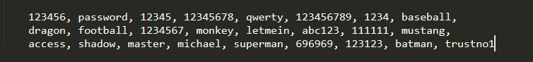

Las contraseñas no son débiles, nosotros lo somos.
Cómo el factor humano es el eslabón más débil de la ciberseguridad, 2 de noviembre 2020
La imagen en el encabezado es una de las tantas funciones que ofrece Google cuando uno guarda sus contraseñas de manera automática. Esta página (passwords.google.com) te avisa de vulnerabilidades y problemas que puede haber con tus contraseñas, y en el caso de la imagen, el usuario cometió los dos peores errores que pudo haber cometido; usar contraseñas débiles y reusar contraseñas en distintos sitios web.
El primer error es importante porque la dificultad de la contraseña determina si tu cuenta puede encontrarse en riesgo o no. Suponiendo que un atacante puede probar hasta 400 000 combinaciones por segundo (las herramientas más comunes prueban de a millones, con la mejor llegando hasta 150 mil millones), una contraseña alfanumérica de 6 dígitos tardaría cerca de 1 hora 47 minutos en ser descifrada. Por el otro lado, una contraseña de 11 caracteres alfanuméricos le tardaría al mismo software hasta 14 104 años, ¿Y una de 12? 521 860 años. En otras palabras: Sí, el tamaño importa. Sin embargo, sabemos que el hacker que se metió en la cuenta de minijuegos.com de tu hijo no estuvo años intentando averiguar la contraseña, probablemente ni siquiera haya estado horas. Lo que los atacantes usan para descifrar las contraseñas de manera rápida es un diccionario de contraseñas.
La imagen muestra lo que se conoce como “Diccionario de contraseñas”. En este caso se listan las 25 contraseñas más comunes del año pasado, pero estos diccionarios suelen tener millones de contraseñas distintas, con algunos llegando hasta 1 493 677 782, eso es, todas las contraseñas que se habían filtrado a internet hasta la fecha en la que se creó el archivo. En otras palabras, si alguien intenta averiguar tu contraseña utilizando ese diccionario, y esa contraseña ya se había filtrado en el pasado por alguna otra cuenta, estás más frito que gallina en Corea.
Esto asusta aún más cuando en vez de suponer atacantes que usan una computadora que corre en Windows Vista, se tienen en cuenta mejores computadoras con programas como John the Ripper, diseñados para probar millones de combinaciones por segundo, y con comodidades tales como un diccionario de contraseñas ya integrado. En el día de hoy, cualquiera puede dedicarse a crackear contraseñas, como bien lo explico en el artículo sobre cómo los atacantes crackean contraseñas.
Dejando los tecnicismos de lado, es de suma importancia crear contraseñas largas, alternando entre letras en minúscula y mayúscula, números y símbolos. Y no me refiero a agregar un “1” al final de la contraseña, o patrones comunes como reemplazar las A por un “4” y las S por un “5” o “$”. Estos patrones son como lo indica el nombre, repetitivos, y los atacantes son lo suficientemente inteligentes como para tenerlo en cuenta. Lo que es más, herramientas como el John the Ripper ya tienen integradas un programa que modifica las contraseñas de su diccionario, para así probar no sólo la contraseña password, sino también variaciones como p@ssw0rd, Passwd, p4$$word y P4ssword!.
Los 3 errores más comunes al establecer contraseñas son crear contraseñas cortas, predecibles o fáciles de adivinar, y reutilizar contraseñas ya establecidas en otro sitio, en palabras de Gino Corti, profesor en IFTS nr. 5 y Project Manager Oracle Cloud. Las variaciones de "Password" cumplen los 3. No sólo son contraseñas cortas de 8 caracteres, sino que también [password] está cuarta en la lista de las contraseñas más usadas, extremadamente reutilizada y predecible. Durante la entrevista, Gino enfatizó en la importancia de tener contraseñas que parezcan aleatorias y contengan mayúsculas, números y símbolos. Y no hace falta que uno se acuerde de sus 30 contraseñas azarosas de 20 caracteres cada una, sino que puede establecer frases de 14 o 20 palabras, y establecer una contraseña con las iniciales de las mismas (siempre incluyendo símbolos). Esta es una técnica muy recomendada porque evita patrones y palabras en la contraseña, por ende aumentando la seguridad.
Otro tema del que también se habla en el último link mencionado, ¿Cómo los atacantes crackean contraseñas?, son las famosas “combolist”. Esto es, una lista de mails con su correspondiente contraseña que se hizo pública en una filtración de datos, y ahora están en venta en internet.

Estas listas muestran miles, a veces millones de usuarios cuyo mail y contraseña fueron filtrados en alguna página como Gawker. Pero el valor de estas cuentas no viene de que otorga acceso a Gawker.com, sino que, como alrededor del 65% de las personas reúsan sus contraseñas entre distintas cuentas, esa misma combinación de mail y contraseña le pueden dar al atacante acceso a cualquier otra página, ya sea Facebook, Instagram o incluso Mercado Libre. En resumen, estas listas que hoy en día cuestan alrededor de 12 USD por 50 000 cuentas son utilizadas por atacantes para ganar acceso a otras cuentas de los mismos usuarios, y todo de manera automática. Esto es un claro ejemplo del negocio que hay en la industria del cibercrimen y cómo no es un ruso el que te está hackeando, sino que un grupo hackeó la base de datos de Sony donde estaba tu cuenta, otro descifró las contraseñas, y un último compró tu información por 0.00024 dólares y la probó en distintas páginas hasta descubrir que usabas la misma contraseña para Sony que para el Santander Río.
Este proceso de probar un combo de mail y contraseña a lo largo de distintos sitios, es lo que se conoce como Credential Stuffing, relleno de contraseñas. Lo que es más, Santiago Barclay, Head of Cyber Security en Aper, ex analista de seguridad informática para el Poder Judicial de la Nación y licenciado en la Universidad de Buenos Aires, en la entrevista describió el credential stuffing como la principal piedra en nuestros zapatos. Según él, este proceso es hoy en día el más relevante para los usuarios, y lo único que se puede hacer para protegerlos es recomendarles que no usen la misma contraseña para todo ya que, tarde o temprano, pasan estas cosas.
¿Recuerdan la portada donde se muestran advertencias por tener contraseñas filtradas y también reutilizadas? Algunas personas que conozco dirían que es culpa del usuario el que lo hayan hackeado, que él se lo buscó por tener contraseñas fáciles de descifrar, y además reutilizarla en la página de su banco. Lo que no mencioné sin embargo es que esa foto es un screenshot de una advertencia que aparecía en mi cuenta de Google cuando empecé el seminario. No tengo cuenta de banco o cuentas con información sensible para los que se lo preguntan, pero aun así ver casos donde alguien pierde todo por reusar contraseñas, le cambia la vida a un hombre.
Y para aquellos que pertenecen a ese 65% como yo solía hacerlo, espero que este artículo les haya hecho cuestionar algunas cosas sobre la seguridad de sus cuentas. HaveIBeenPwned.com te permite buscar tu mail dentro de una colección de 10 203 439 212 cuentas filtradas a internet, y así averiguar si tus cuentas ya fueron publicadas sin tu conocimiento. Y recuerden, es nuestra propia incapacidad para recordar contraseñas difíciles, lo que nos hace un objetivo fácil. Y es por eso que sostengo: No seas como los demás y preocupate por tu ciberseguridad, porque si vos no lo hacés, ¿entonces quién?
Índice
- Home
- Introducción
- Artículos
- Las contraseñas no son débiles, nosotros lo somos
- La verdad sobre los sitios "No seguros"
- Phishing, la verdadera amenaza al navegar por internet
- Man in the Middle y WiFi Pineapples
- "La rebelión de las máquinas" y ataques DDoS
- El anonimato y el negocio de la información
- Ataques de fuerza bruta y los diccionarios de contraseñas
- "Las (des)ventajas de ser invisible"
- El comportamiento humano y el anonimato
- Encuestas
- Conclusión
- Bibliografía